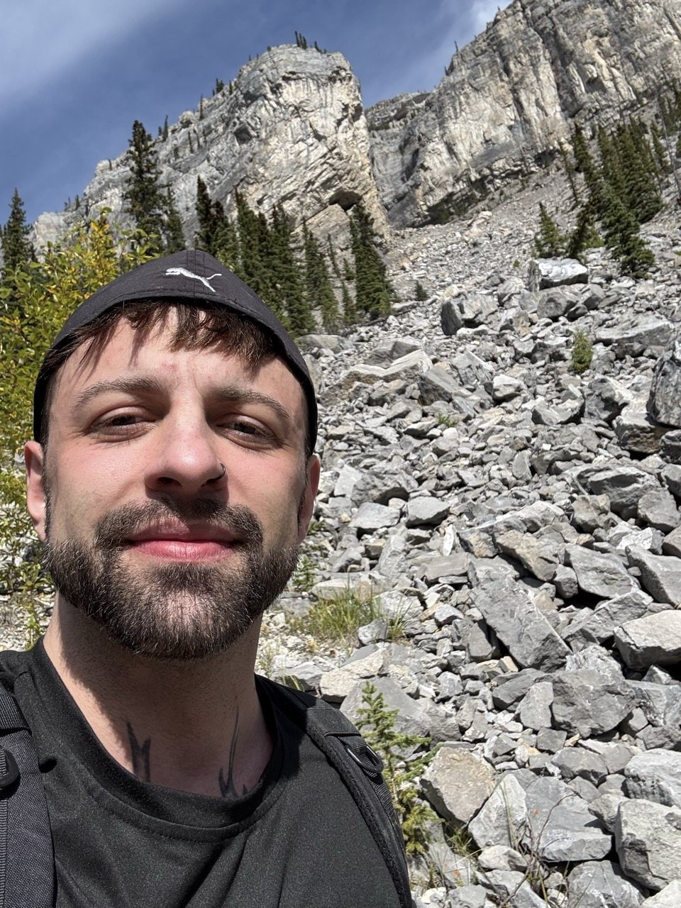
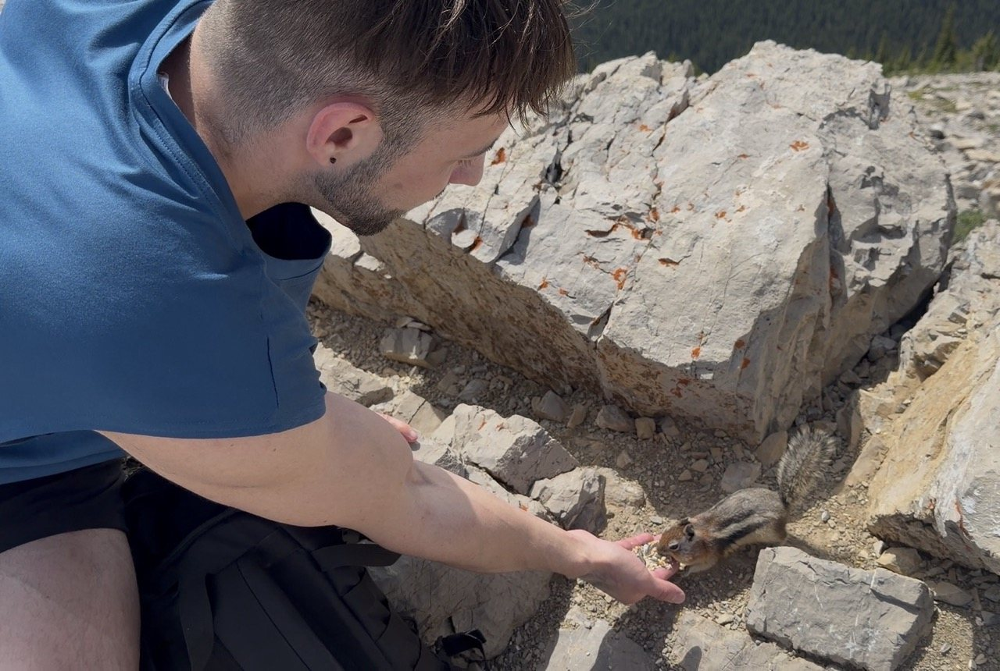

About the
Wayfinder
My story, mistakes, core knowledge
and the skills behind the Juniper Method.

Hi fellow trees,
I’m Demetri.
Whether you’re here out of curiosity or skepticism, welcome!
For most of my life, people told me how to behave. When I asked “Why?”, the answer was usually “Because I said so.” I followed their advice faithfully, and when it didn’t work out, I felt lied to. I was disgusted, and I rebelled against all of it, even the parts that were good for me. Confused and angry, I made every self-destructive choice I could.
But then I hit rock bottom and realized that my bitterness was going to kill me, so I started asking why again. This time I found definitive answers from many brilliant scientists and their peer-reviewed work. As it turns out, life has a pretty clear formula for ease and enjoyment, through all the activities we deem bad, neutral and good!
There is one catch… What we believe decides what we can even accept. If you believe that there’s no clear formula to life, then you will continue to validate your own confusion. Trust me, I was the pro at it.
If some part of you is curious if life can be enjoyable all the time, I’d be glad to help you find your way into that ease.
My Super Cute Mistakes:
- Worry, negative self-talk & overexplaining
- Suppressing others & never taking advice
- Doom-scrolling, over-spending & chronic tension
- Heavy drug use, drinking & fast food abuse
- High-dose Citalopram & Vyvanse
My Core Knowledge:
1. Worth isn’t something you earn or lose. I mean this literally. We’re made of the same atoms, from the same origin, the same Big Bang. If worth had to be earned, “being enough” could never be satisfied, because there would always be a higher bar. So I avoid saying “You are enough.” The more accurate phrase is simply “You are.” It doesn’t sound as captivating, but it’s true for everyone, all the time.
2. Nobody is self-made. I will forever be a patchwork of my parents, my friends, my lovers, the animals, the trees, and more than a few social media influencers. It took plenty of mistakes and burnt bridges to get here. Now I’ve promised myself to give my energy to others, out of gratitude to everyone who once gave theirs to me.
3. Joy lives in non-judgmental play. Remember laughing so hard at a mistake that it stopped mattering? That lightness can be felt in all situations. So much of the stress and harsh self-talk we carry fades once we give ourselves permission to play and stumble, without keeping score.

Skills & Experience
The Juniper Method draws on my study and practice across three disciplines.
Trained in the
following disciplines:
- Physiology (roots): Personal Training, Nutrition, Neurochemistry, Nervous System Regulation
- Psychology (trunk): Rational Emotive Behavior Therapy (REBT), Acceptance and Commitment Therapy (ACT), Attachment Theory, Life Coaching
- Philosophy (crown): Naturalism, Existentialism, Buddhism, Stoicism
Juniper Wayfinding is whole-person therapy. It doesn’t diagnose, prescribe medication, or replace medical or crisis care.
You’ve read my story. I’d like to hear yours.
This one’s on me, with no obligation:
Not quite sure yet? Okay, okay. Here’s the meaning of life,
as calculated by science and the cosmos:
You are.